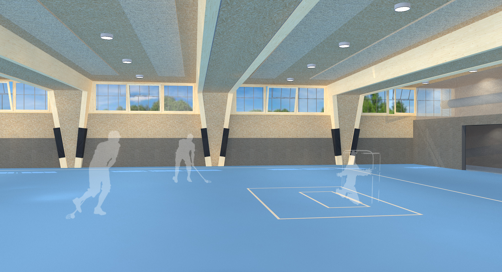
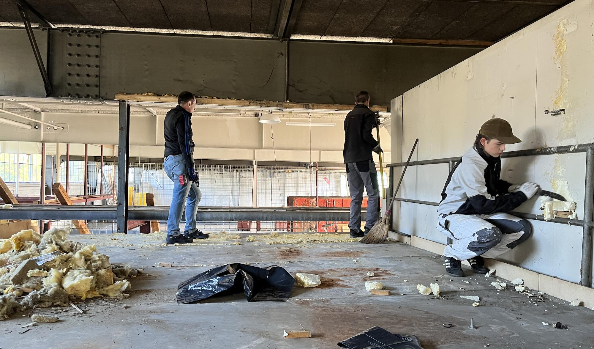
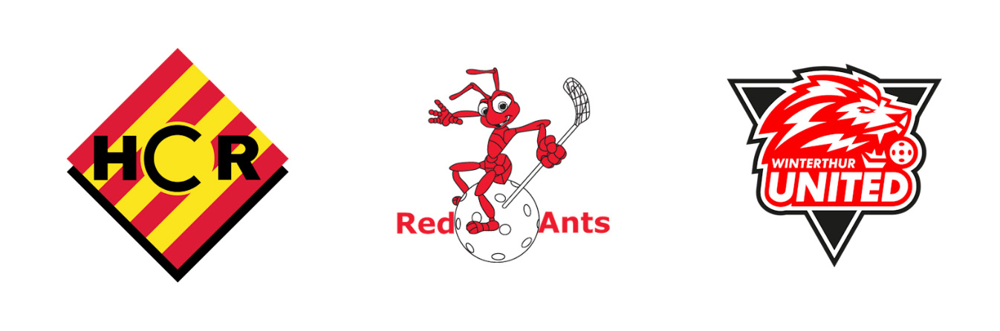
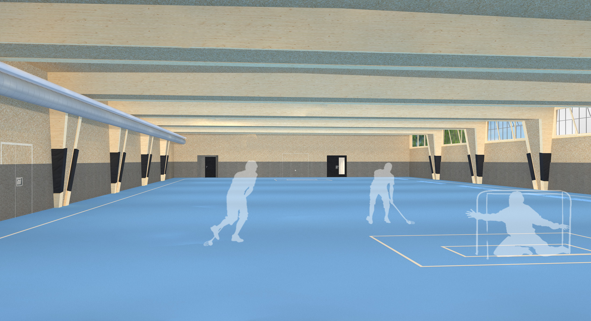

Ein gemeinsames Vorhaben der Winterthurer Unihockeyvereine zur nachhaltigen Sicherung der Hallenkapazität in der Region.

Sulzerallee, Winterthur — 2025

Umbau & Renovation 2025/26
Die Sporthalle Sulzerallee ist ein gemeinsames Projekt der Winterthurer Unihockeyvereine. Mit dem eigenständigen Verein soll eine bestehende Lagerhalle ausgebaut und als Sportinfrastruktur betrieben werden.
Ziel ist es, zusätzliche Trainingszeiten für Vereine und Schulsport zu ermöglichen und den akuten Bedarf an Hallenkapazität in Winterthur nachhaltig zu decken.
Da die Halle auf bestehende Infrastruktur aufbaut, kann sie ressourcenschonend, kostenoptimiert und rasch realisiert werden. Der Umbau läuft in 2025/26, die Eröffnung ist für August 2026 geplant.
Der Verein Sporthalle Sulzerallee hat einen klar definierten Zweck: Er schafft Hallenkapazität, die Winterthur braucht.
Der Verein wurde von den Winterthurer Unihockeyvereinen gegründet, um das Projekt gemeinsam zu realisieren.
Mehrere Unihockeyvereine aus Winterthur haben sich zum Verein Sporthalle Sulzerallee zusammengeschlossen. Gemeinsam planen, finanzieren und bauen sie eine Halle, die allen zugute kommt — nicht nur dem Unihockey.
Das Projekt entsteht ohne öffentliche Gelder. Stattdessen tragen Mitglieder, Passivmitglieder, Gönner und die beteiligten Vereine gemeinsam die Kosten. Dieses Modell macht die Halle unabhängig und nachhaltig.


Erstbericht über das Projekt und die Pläne der Winterthurer Unihockeyvereine.
PDF öffnen Der Landbote BerichtFolgebericht mit ersten Reaktionen aus der Winterthurer Vereinslandschaft.
PDF öffnen Der Landbote BerichtAktueller Stand des Projekts und Ausblick auf Umbau und Eröffnung.
PDF öffnenWerde Passivmitglied oder reserviere die Halle.